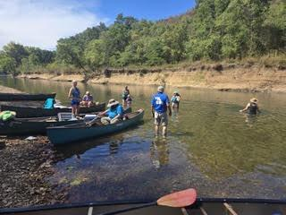

Sept 12–13: The 67th annual clean-up, Niangua River
Thirteen people and one dog made the trip. On Saturday, six canoes and two kayaks floated from near the Highway 64 bridge to the Barclay take-out. There were a lot of people on the river, but we had a nice float, and, amazingly, found very little trash, which is unusual for the Niangua. The monthly club meeting took place around the Saturday-night campfire, as we watched a fireworks show put on nearby.
Sunday’s float had five canoes and one kayak. We put in at the old Fort Niangua campground and floated a couple of miles to Riverfront Campground. Four tires came out of this stretch, along with a small number of cans and trash.
A special shout-out to our youngest floater, four years old and on her first-ever float trip. She was an absolute blast to be around, and we look forward to seeing her on many more. Thanks to all who participated this year.
